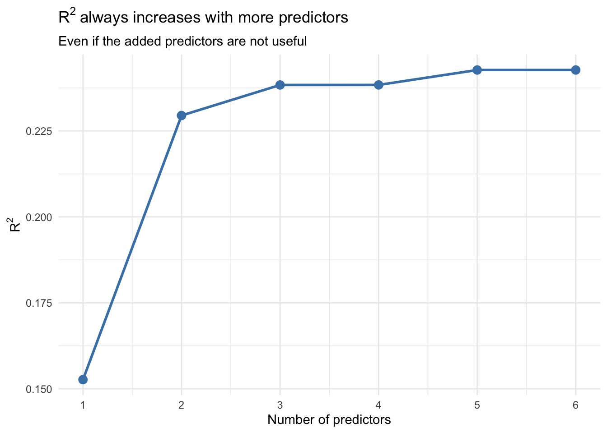
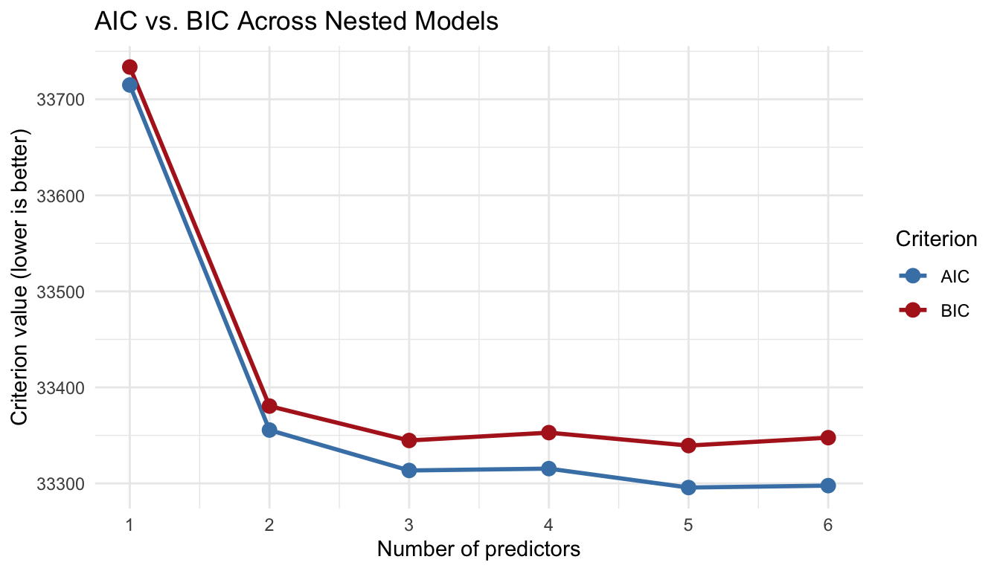
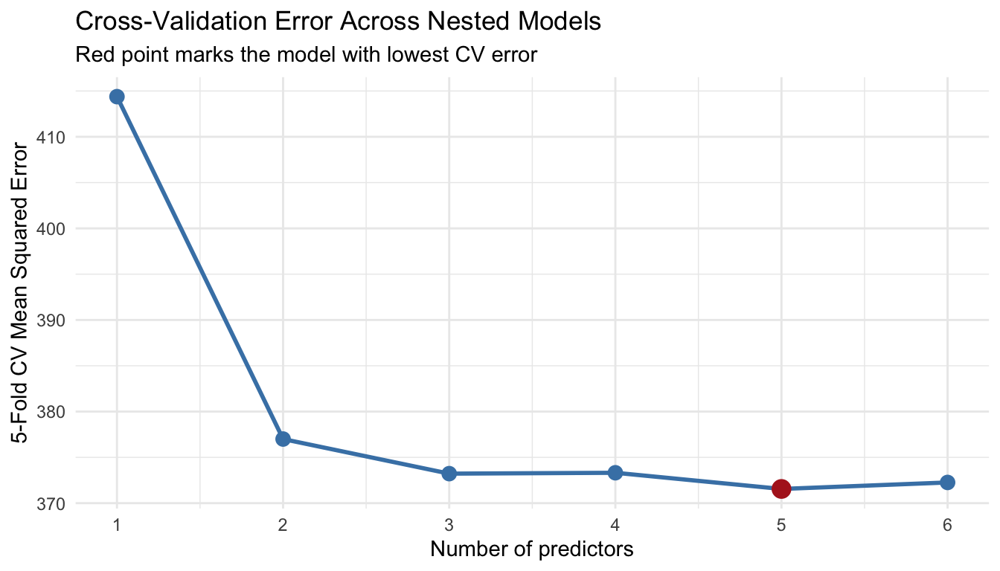

This document accompanies the Day 7 morning lecture slides. It demonstrates the practical R tools for model selection and cross-validation using two datasets:
FITNESS dataset: stepwise selection with multiple physiological predictors
2 Why \(R^2\) Is Not Enough
A natural first instinct is to pick the model with the highest \(R^2\). Let’s see why this fails.
# Fit models with increasing numbers of predictorsm1 <-lm(sysBP ~ age, data = framingham)m2 <-lm(sysBP ~ age + BMI, data = framingham)m3 <-lm(sysBP ~ age + BMI + totChol, data = framingham)m4 <-lm(sysBP ~ age + BMI + totChol + cigsPerDay, data = framingham)m5 <-lm(sysBP ~ age + BMI + totChol + cigsPerDay + glucose, data = framingham)m6 <-lm(sysBP ~ age + BMI + totChol + cigsPerDay + glucose + diabetes, data = framingham)# R-squared always goes uptibble(predictors =1:6,R_squared =c(summary(m1)$r.squared, summary(m2)$r.squared,summary(m3)$r.squared, summary(m4)$r.squared,summary(m5)$r.squared, summary(m6)$r.squared)) |>ggplot(aes(x = predictors, y = R_squared)) +geom_line(color ="steelblue", linewidth =1) +geom_point(color ="steelblue", size =3) +scale_x_continuous(breaks =1:6) +labs(x ="Number of predictors", y =expression(R^2),title =expression(R^2~"always increases with more predictors"),subtitle ="Even if the added predictors are not useful") +theme_minimal()

\(R^2\) goes up with every predictor we add, regardless of whether it actually improves prediction. We need criteria that penalize unnecessary complexity.
3 AIC and BIC
3.1 Comparing Models
AIC and BIC add a penalty for the number of parameters. Lower values are better.
A \(\Delta\)AIC less than 2 means the models are essentially equivalent. A \(\Delta\)AIC greater than 10 is strong evidence for the lower-AIC model. When models are close, prefer the simpler one.
3.3 Visualizing AIC and BIC Together
# Extract the AIC and BIC values correctlyaic_vals <-c(AIC(m1), AIC(m2), AIC(m3), AIC(m4), AIC(m5), AIC(m6))bic_vals <-c(BIC(m1), BIC(m2), BIC(m3), BIC(m4), BIC(m5), BIC(m6))comparison <-tibble(predictors =rep(1:6, 2),criterion =rep(c("AIC", "BIC"), each =6),value =c(aic_vals, bic_vals))ggplot(comparison, aes(x = predictors, y = value, color = criterion)) +geom_line(linewidth =1) +geom_point(size =3) +scale_x_continuous(breaks =1:6) +scale_color_manual(values =c("AIC"="steelblue", "BIC"="firebrick")) +labs(x ="Number of predictors", y ="Criterion value (lower is better)",title ="AIC vs. BIC Across Nested Models",color ="Criterion") +theme_minimal()

4 Stepwise Selection with step()
4.1 FITNESS Dataset: Full Model
We use the FITNESS dataset from Day 6. Start with a model containing all six predictors.
The trace output shows exactly what the algorithm does at each step: which predictor it considers adding or removing, the resulting AIC, and which change it selects. The final model is the one where no single add or remove improves AIC.
summary(model_step_both)
Call:
lm(formula = Y ~ age + weight + runtime + runpulse + maxpulse,
data = FITNESS)
Residuals:
Min 1Q Median 3Q Max
-5.4744 -0.8457 0.0074 0.9989 5.3764
Coefficients:
Estimate Std. Error t value Pr(>|t|)
(Intercept) 102.11135 11.97990 8.524 7.26e-09 ***
age -0.21901 0.09551 -2.293 0.03053 *
weight -0.07231 0.05331 -1.356 0.18709
runtime -2.68522 0.34100 -7.874 3.13e-08 ***
runpulse -0.37307 0.11715 -3.185 0.00386 **
maxpulse 0.30513 0.13394 2.278 0.03154 *
---
Signif. codes: 0 '***' 0.001 '**' 0.01 '*' 0.05 '.' 0.1 ' ' 1
Residual standard error: 2.275 on 25 degrees of freedom
Multiple R-squared: 0.848, Adjusted R-squared: 0.8176
F-statistic: 27.9 on 5 and 25 DF, p-value: 1.809e-09
4.3 Comparing Directions
Forward selection and backward elimination can give different results.
# Forward: start from intercept onlymodel_null <-lm(Y ~1, data = FITNESS)model_step_fwd <-step(model_null,scope =list(lower = model_null, upper = model_full),direction ="forward", trace =0)# Backward: start from full modelmodel_step_bwd <-step(model_full, direction ="backward", trace =0)# Comparetibble(direction =c("Forward", "Backward", "Both"),formula =c(deparse(formula(model_step_fwd)),deparse(formula(model_step_bwd)),deparse(formula(model_step_both))),AIC =c(AIC(model_step_fwd), AIC(model_step_bwd), AIC(model_step_both)),R_squared =c(summary(model_step_fwd)$r.squared,summary(model_step_bwd)$r.squared,summary(model_step_both)$r.squared))
# A tibble: 3 × 4
direction formula AIC R_squared
<chr> <chr> <dbl> <dbl>
1 Forward Y ~ runtime + age + runpulse + maxpulse + weight 146. 0.848
2 Backward Y ~ age + weight + runtime + runpulse + maxpulse 146. 0.848
3 Both Y ~ age + weight + runtime + runpulse + maxpulse 146. 0.848
Note
If the three directions select the same model, you can be more confident in the result. If they disagree, it suggests that some predictors are marginal and the choice may not matter much practically.
4.4 Formally Comparing Nested Models
We can also use the partial F-test (anova()) to compare any two nested models directly.
# Does the full model improve significantly over the stepwise model?anova(model_step_both, model_full)
Analysis of Variance Table
Model 1: Y ~ age + weight + runtime + runpulse + maxpulse
Model 2: Y ~ age + weight + runtime + restpulse + runpulse + maxpulse
Res.Df RSS Df Sum of Sq F Pr(>F)
1 25 129.42
2 24 128.86 1 0.56044 0.1044 0.7494
A non-significant p-value means the extra predictors in the full model do not meaningfully improve fit — we prefer the simpler stepwise model.
5 Cross-Validation
5.1 The Idea
AIC estimates prediction error using a formula. Cross-validation estimates it by actually predicting held-out data. We implement 5-fold CV from scratch, then compare to AIC.
5.2 Setting Up 5-Fold CV
set.seed(42) # for reproducibility# Assign each observation to a foldn <-nrow(framingham)K <-5framingham$fold <-sample(rep(1:K, length.out = n))table(framingham$fold)
1 2 3 4 5
761 761 761 760 760
5.3 Writing a CV Function
cv_mse <-function(formula, data, K =5) { mse_per_fold <-numeric(K)for (k in1:K) { train <- data[data$fold != k, ] test <- data[data$fold == k, ] model <-lm(formula, data = train) preds <-predict(model, newdata = test) mse_per_fold[k] <-mean((test$sysBP - preds)^2) }mean(mse_per_fold)}
This function:
Loops over the \(K\) folds.
For each fold, fits the model on the training data (everything except that fold).
Predicts the held-out fold.
Computes the mean squared error (MSE) for that fold.
# A tibble: 6 × 3
model predictors cv_mse
<chr> <int> <dbl>
1 age only 1 414.
2 age + BMI 2 377.
3 age + BMI + totChol 3 373.
4 age + BMI + totChol + cigsPerDay 4 373.
5 age + BMI + totChol + cigsPerDay + glucose 5 372.
6 age + BMI + totChol + cigsPerDay + glucose + diabetes 6 372.
5.5 Visualizing CV Error
ggplot(cv_results, aes(x = predictors, y = cv_mse)) +geom_line(color ="steelblue", linewidth =1) +geom_point(color ="steelblue", size =3) +geom_point(data =filter(cv_results, cv_mse ==min(cv_mse)),color ="firebrick", size =4) +scale_x_continuous(breaks =1:6) +labs(x ="Number of predictors", y ="5-Fold CV Mean Squared Error",title ="Cross-Validation Error Across Nested Models",subtitle ="Red point marks the model with lowest CV error") +theme_minimal()

Important
Compare this plot to the \(R^2\) plot from Section 1. \(R^2\) always goes up. CV error goes down and then levels off or increases as overfitting begins. This is why CV is a better guide for model selection than \(R^2\).
In many practical situations, AIC and CV will select the same model or very similar ones. When they disagree, it is usually on marginal predictors that don’t change the conclusions meaningfully.
6 Using rsample for Cross-Validation
The manual loop above is instructive, but in practice the rsample package makes CV cleaner and less error-prone.
library(rsample)set.seed(42)folds <-vfold_cv(framingham, v =5)folds
The standard deviation tells you how variable the CV error is across folds. If it is large relative to the mean, the estimate is noisy and you should interpret model comparisons cautiously.
7 Putting It All Together
Here is the complete model selection workflow applied to the Framingham data:
Step 1: Check variable form (Day 6 — loess smoothers for each predictor).
Step 2: Fit a full model with all candidate predictors.
full <-lm(sysBP ~ age + BMI + totChol + cigsPerDay + glucose + diabetes,data = framingham)summary(full)
Call:
lm(formula = sysBP ~ age + BMI + totChol + cigsPerDay + glucose +
diabetes, data = framingham)
Residuals:
Min 1Q Median 3Q Max
-60.486 -12.666 -2.550 9.758 131.745
Coefficients:
Estimate Std. Error t value Pr(>|t|)
(Intercept) 37.688847 3.082030 12.229 < 2e-16 ***
age 0.824601 0.038772 21.268 < 2e-16 ***
BMI 1.450791 0.078225 18.546 < 2e-16 ***
totChol 0.048131 0.007265 6.625 3.96e-11 ***
cigsPerDay -0.002538 0.026752 -0.095 0.92442
glucose 0.061350 0.016688 3.676 0.00024 ***
diabetesYes 0.116648 2.432377 0.048 0.96175
---
Signif. codes: 0 '***' 0.001 '**' 0.01 '*' 0.05 '.' 0.1 ' ' 1
Residual standard error: 19.25 on 3796 degrees of freedom
Multiple R-squared: 0.2427, Adjusted R-squared: 0.2415
F-statistic: 202.8 on 6 and 3796 DF, p-value: < 2.2e-16
Step 3: Run stepwise selection with AIC.
selected <-step(full, direction ="both", trace =0)summary(selected)
Call:
lm(formula = sysBP ~ age + BMI + totChol + glucose, data = framingham)
Residuals:
Min 1Q Median 3Q Max
-60.532 -12.666 -2.531 9.781 131.752
Coefficients:
Estimate Std. Error t value Pr(>|t|)
(Intercept) 37.576822 2.848580 13.191 < 2e-16 ***
age 0.825322 0.038117 21.652 < 2e-16 ***
BMI 1.451474 0.077934 18.624 < 2e-16 ***
totChol 0.048114 0.007261 6.627 3.91e-11 ***
glucose 0.061875 0.013250 4.670 3.12e-06 ***
---
Signif. codes: 0 '***' 0.001 '**' 0.01 '*' 0.05 '.' 0.1 ' ' 1
Residual standard error: 19.25 on 3798 degrees of freedom
Multiple R-squared: 0.2427, Adjusted R-squared: 0.2419
F-statistic: 304.3 on 4 and 3798 DF, p-value: < 2.2e-16
Step 4: Compare with AIC and a formal F-test.
AIC(full, selected)
df AIC
full 8 33297.68
selected 6 33293.69
anova(selected, full)
Analysis of Variance Table
Model 1: sysBP ~ age + BMI + totChol + glucose
Model 2: sysBP ~ age + BMI + totChol + cigsPerDay + glucose + diabetes
Res.Df RSS Df Sum of Sq F Pr(>F)
1 3798 1407182
2 3796 1407178 2 4.1747 0.0056 0.9944
This seven-step workflow — check variable form, fit full model, stepwise selection, AIC comparison, cross-validation, diagnostics, interpretation — is a template you can apply to any regression analysis.